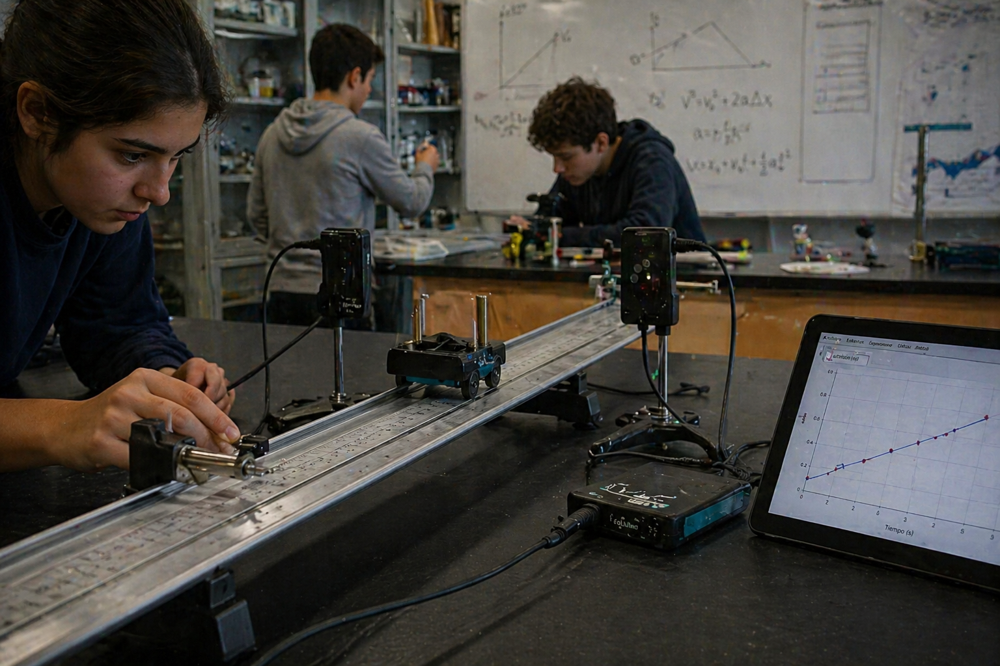

Rapidez
Relaciona distancia recorrida y tiempo. Es escalar: no necesita dirección para quedar definida.

La velocidad permite describir qué tan rápido cambia la posición y hacia dónde ocurre ese cambio.
En el lenguaje cotidiano usamos “velocidad” para decir rapidez. En Física conviene distinguir: la rapidez indica cuánto camino se recorre por unidad de tiempo; la velocidad agrega dirección y sentido.
Un auto puede ir a 60 km/h hacia el norte o a 60 km/h hacia el sur. La rapidez es la misma, pero la velocidad no: cambia el sentido del movimiento.
Relaciona distancia recorrida y tiempo. Es escalar: no necesita dirección para quedar definida.
Relaciona desplazamiento y tiempo. Es vectorial: incluye módulo, dirección y sentido.
En un gráfico posición-tiempo, la inclinación de la recta informa qué tan rápido cambia la posición.
Si una bicicleta recorre 120 metros en 20 segundos, su rapidez media es:
Si además decimos “hacia el este”, estamos indicando velocidad.
Medí el tiempo que tarda una persona en caminar 10 metros. Calculá la rapidez media. Luego repetí el recorrido en sentido contrario y discutí: ¿cambió la rapidez?, ¿cambió la velocidad?